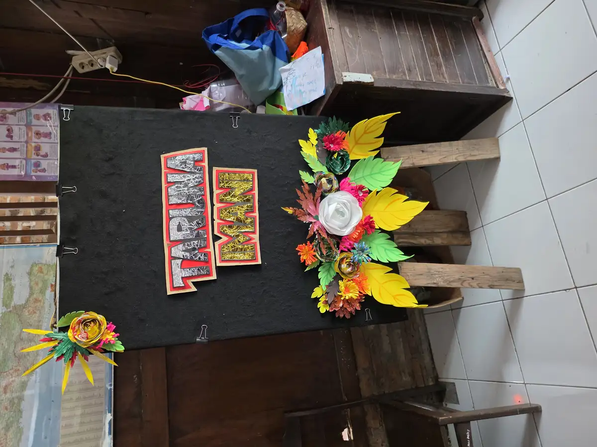

Mencari SLB terdekat dari lokasi Anda merupakan langkah penting bagi orang tua yang memiliki anak berkebutuhan khusus (ABK). Sekolah Luar Biasa (SLB) adalah lembaga pendidikan formal yang dirancang khusus untuk melayani siswa dengan berbagai jenis disabilitas, mulai dari tunanetra, tuna rungu, tunagrahita, hingga tunaganda.
Khusus untuk wilayah Daerah Istimewa Yogyakarta (DIY), terdapat puluhan SLB yang tersebar di berbagai kabupaten dan kota. Namun, memilih sekolah yang tepat bukan sekadar soal jarak terdekat. Orang tua perlu mempertimbangkan jenis kekhususan anak, kualitas tenaga pendidik, fasilitas yang tersedia, dan pendekatan pendidikan yang digunakan.
Artikel ini akan membantu Anda menemukan SLB terdekat dengan panduan lengkap, termasuk daftar SLB di Yogyakarta dan sekitarnya, tips memilih SLB yang tepat, serta alternatif selain SLB seperti sekolah inklusi. Di YUKA (Yayasan Ukhuwah Kaffah Amanatullah), kami mengelola Sekolah Inklusi Taruna Imani di Sleman yang bisa menjadi salah satu pilihan pendidikan untuk anak berkebutuhan khusus Anda.
Daftar Isi
- Apa Itu SLB (Sekolah Luar Biasa)?
- Jenis-Jenis SLB Berdasarkan Kekhususan
- Cara Mencari SLB Terdekat dari Lokasi Anda
- Daftar SLB di Yogyakarta dan DIY
- Tips Memilih SLB yang Tepat untuk Anak
- Perbedaan SLB dan Sekolah Inklusi
- Alternatif Selain SLB untuk ABK
- Sekolah Inklusi Taruna Imani YUKA sebagai Alternatif
- FAQ Seputar SLB
Apa Itu SLB (Sekolah Luar Biasa)?
SLB (Sekolah Luar Biasa) adalah satuan pendidikan khusus yang diselenggarakan bagi peserta didik yang memiliki tingkat kesulitan dalam mengikuti proses pembelajaran karena kelainan fisik, emosional, mental, sosial, dan/atau memiliki potensi kecerdasan dan bakat istimewa. Untuk memahami lebih dalam tentang SLB, baca artikel kami tentang SLB adalah: Pengertian dan Jenis Sekolah Luar Biasa.
Berdasarkan Undang-Undang Nomor 20 Tahun 2003 tentang Sistem Pendidikan Nasional, SLB merupakan bagian dari sistem pendidikan khusus yang diselenggarakan untuk peserta didik yang memiliki tingkat kesulitan dalam mengikuti proses pembelajaran. SLB menyediakan jenjang pendidikan dari SDLB (setara SD), SMPLB (setara SMP), hingga SMALB (setara SMA).
Karakteristik SLB
- Kurikulum khusus: Menggunakan kurikulum yang dimodifikasi dan disesuaikan dengan kebutuhan serta kemampuan siswa
- Guru terlatih: Tenaga pendidik memiliki latar belakang pendidikan luar biasa (PLB) atau pendidikan khusus
- Rasio guru-siswa kecil: Umumnya 1 guru untuk 5-8 siswa, memungkinkan pendekatan yang lebih individual
- Fasilitas khusus: Menyediakan fasilitas seperti ruang terapi, alat bantu belajar khusus, dan lingkungan yang disesuaikan
- Program vokasional: Pada jenjang SMALB, biasanya tersedia program keterampilan kerja
Jenis-Jenis SLB Berdasarkan Kekhususan
Sebelum mencari SLB terdekat, penting untuk mengetahui jenis-jenis SLB yang ada berdasarkan kekhususan siswa yang dilayani. Memahami klasifikasi ini akan membantu Anda menemukan sekolah yang paling sesuai dengan kebutuhan anak.
| Jenis SLB | Kekhususan | Kondisi Siswa |
|---|---|---|
| SLB-A | Tunanetra | Anak dengan gangguan penglihatan (buta total atau low vision) |
| SLB-B | Tunarungu | Anak dengan gangguan pendengaran dan/atau tuna wicara |
| SLB-C | Tunagrahita | Anak dengan disabilitas intelektual (ringan: C, sedang: C1) |
| SLB-D | Tunadaksa | Anak dengan gangguan fisik/motorik, termasuk cerebral palsy |
| SLB-E | Tunalaras | Anak dengan gangguan emosi dan perilaku |
| SLB-G | Tunaganda | Anak dengan dua atau lebih jenis kelainan |
| SLB Campuran | Berbagai kekhususan | Menerima siswa dengan berbagai jenis kebutuhan khusus |
Perlu Diketahui
Sebagian besar SLB di Yogyakarta dan daerah lainnya merupakan SLB campuran yang melayani siswa dengan berbagai jenis kekhususan. Hal ini karena jumlah siswa dengan satu jenis kekhususan tertentu di satu daerah sering kali tidak cukup banyak untuk mengisi satu SLB khusus. SLB campuran biasanya tetap mengelompokkan siswa berdasarkan jenis kekhususan dalam kelas yang berbeda.
Cara Mencari SLB Terdekat dari Lokasi Anda
Berikut beberapa cara praktis untuk menemukan SLB terdekat dari lokasi saya yang sering ditanyakan orang tua:
1. Gunakan Google Maps
Cara termudah mencari SLB terdekat adalah melalui Google Maps:
- Buka Google Maps di HP atau komputer
- Ketik "SLB terdekat" atau "Sekolah Luar Biasa" di kolom pencarian
- Google Maps akan menampilkan daftar SLB beserta jarak, rating, jam operasional, dan ulasan dari pengunjung
- Pastikan untuk mengaktifkan lokasi (GPS) agar hasil pencarian lebih akurat
2. Data Referensi Kemendikbud
Kementerian Pendidikan, Kebudayaan, Riset, dan Teknologi menyediakan database lengkap semua sekolah di Indonesia, termasuk SLB:
- Kunjungi website referensi.data.kemdikbud.go.id
- Pilih jenjang "SLB" pada filter
- Pilih provinsi dan kabupaten/kota yang diinginkan
- Akan muncul daftar lengkap SLB beserta informasi NPSN (Nomor Pokok Sekolah Nasional), alamat, dan status (negeri/swasta)
3. Dinas Pendidikan Daerah
Hubungi Dinas Pendidikan kabupaten/kota setempat untuk mendapatkan informasi terkini tentang SLB yang beroperasi di wilayah Anda. Mereka biasanya memiliki data lengkap termasuk kapasitas penerimaan siswa baru dan program unggulan masing-masing SLB.
4. Rumah Sakit dan Klinik Tumbuh Kembang
Jika anak Anda sedang menjalani pemeriksaan atau terapi di rumah sakit atau klinik tumbuh kembang, tanyakan kepada dokter atau terapis tentang rekomendasi SLB yang sesuai dengan kebutuhan anak. Mereka biasanya memiliki jaringan dengan sekolah-sekolah khusus di daerah sekitar.
5. Komunitas Orang Tua ABK
Bergabunglah dengan komunitas orang tua ABK di media sosial (Facebook groups, WhatsApp groups). Orang tua yang sudah berpengalaman biasanya bisa memberikan rekomendasi dan review langsung berdasarkan pengalaman mereka dengan SLB tertentu.

Daftar SLB di Yogyakarta dan DIY
Berikut adalah daftar SLB di Yogyakarta dan sekitarnya berdasarkan data dari Dinas Pendidikan DIY. Daftar ini mencakup SLB Negeri dan SLB Swasta yang tersebar di lima kabupaten/kota di DIY.
SLB di Kota Yogyakarta
| Nama SLB | Jenis | Status | Alamat |
|---|---|---|---|
| SLB Negeri 1 Yogyakarta | Campuran (A, B, C, D) | Negeri | Jl. Bintaran Tengah No. 3, Wirogunan, Mergangsan |
| SLB Negeri 2 Yogyakarta | Campuran | Negeri | Jl. Panembahan Senopati No. 46, Prawirodirjan |
| SLB Marsudi Putra 1 | E (Tunalaras) | Swasta | Jl. Bimokurdo No. 1, Sapen, Gondokusuman |
| SLB Yapenas | C (Tunagrahita) | Swasta | Jl. Parangtritis Km 6,5, Sewon |
SLB di Kabupaten Sleman
| Nama SLB | Jenis | Status | Alamat |
|---|---|---|---|
| SLB Negeri 1 Sleman | Campuran (B, C) | Negeri | Jl. Kaliurang Km 17,5, Pakembinangun, Pakem |
| SLB Negeri 2 Sleman | Campuran | Negeri | Jl. Getas, Tirtomartani, Kalasan |
| SLB Wiyata Dharma 1 Sleman | B (Tunarungu) | Swasta | Jl. Magelang Km 17,5, Margorejo, Tempel |
| SLB Dian Amanah | Autis | Swasta | Jl. Sumberan Rt 01, Sariharjo, Ngaglik |
| SLB Dharma Bhakti Piyungan | C (Tunagrahita) | Swasta | Jl. Wonosari Km 12, Srimulyo, Piyungan |
SLB di Kabupaten Bantul
| Nama SLB | Jenis | Status | Alamat |
|---|---|---|---|
| SLB Negeri 1 Bantul | Campuran (A, B, C, D) | Negeri | Jl. Wates Km 3, Ngestiharjo, Kasihan |
| SLB Negeri 2 Bantul | Campuran | Negeri | Jl. Imogiri Barat, Bangunharjo, Sewon |
| SLB Ma'arif Bantul | Campuran | Swasta | Bantul |
SLB di Kabupaten Gunungkidul
| Nama SLB | Jenis | Status | Alamat |
|---|---|---|---|
| SLB Negeri 1 Gunungkidul | Campuran | Negeri | Jl. Pemuda No. 1, Baleharjo, Wonosari |
| SLB Negeri 2 Gunungkidul | Campuran | Negeri | Padukuhan Wareng, Wonosari |
| SLB Bakti Putra | Campuran | Swasta | Ngawen, Gunungkidul |
SLB di Kabupaten Kulon Progo
| Nama SLB | Jenis | Status | Alamat |
|---|---|---|---|
| SLB Negeri 1 Kulon Progo | Campuran | Negeri | Jl. Sugiman, Wates |
| SLB Negeri 2 Kulon Progo | Campuran | Negeri | Samigaluh, Kulon Progo |
| SLB PGRI Sentolo | Campuran | Swasta | Sentolo, Kulon Progo |
Catatan Penting
Daftar SLB di Yogyakarta di atas mungkin tidak mencakup semua sekolah dan informasi dapat berubah. Untuk data terbaru dan paling akurat, silakan hubungi Dinas Pendidikan Pemuda dan Olahraga DIY atau cek website referensi.data.kemdikbud.go.id. Selain SLB, terdapat juga banyak sekolah inklusi di DIY yang menerima ABK untuk belajar bersama siswa reguler.
Tips Memilih SLB yang Tepat untuk Anak
Menemukan SLB terdekat saja tidak cukup. Anda perlu memastikan bahwa sekolah tersebut benar-benar sesuai dengan kebutuhan anak. Berikut tips lengkap untuk memilih SLB yang tepat.
1. Pastikan Kesesuaian Jenis Kekhususan
Langkah pertama adalah memastikan SLB tersebut melayani jenis kekhususan yang sesuai dengan kondisi anak Anda. Anak autis membutuhkan pendekatan yang berbeda dari anak tunagrahita atau tunarungu. Lakukan asesmen ABK terlebih dahulu untuk mengetahui kebutuhan spesifik anak.
2. Kunjungi Langsung Sekolah
Jangan hanya mengandalkan informasi dari internet atau brosur. Kunjungi langsung SLB yang Anda pertimbangkan untuk:
- Melihat kondisi fisik dan kebersihan lingkungan sekolah
- Mengamati suasana belajar mengajar di kelas
- Bertemu dan berbicara dengan kepala sekolah dan guru
- Melihat fasilitas yang tersedia (ruang terapi, perpustakaan, lab keterampilan)
- Mengamati bagaimana guru berinteraksi dengan siswa
3. Perhatikan Kualifikasi Guru
Guru yang berkualitas adalah kunci pendidikan yang baik. Pastikan guru-guru di SLB memiliki:
- Latar belakang pendidikan di bidang Pendidikan Luar Biasa (PLB) atau Pendidikan Khusus
- Pengalaman mengajar anak dengan kebutuhan khusus yang sama dengan anak Anda
- Kesabaran dan empati yang tinggi
- Kemampuan menyusun program pendidikan individual (IEP)
4. Evaluasi Program dan Kurikulum
- Apakah sekolah menyediakan program pendidikan individual (IEP) untuk setiap siswa?
- Apakah ada program terapi terintegrasi (terapi wicara, terapi okupasi, dll)?
- Apakah kurikulum mencakup keterampilan hidup (life skills) dan bukan hanya akademik?
- Apakah ada program vokasional untuk jenjang SMALB?
- Bagaimana sistem evaluasi dan pelaporan perkembangan siswa?
5. Pertimbangkan Jarak dan Aksesibilitas
Meskipun kualitas lebih penting dari jarak, faktor aksesibilitas tetap perlu dipertimbangkan:
- Berapa jarak dan waktu tempuh dari rumah ke sekolah?
- Apakah tersedia transportasi sekolah (antar-jemput)?
- Apakah jalur menuju sekolah aman dan mudah dilalui?
- Apakah lingkungan sekitar sekolah mendukung dan aman?
6. Bicarakan dengan Orang Tua Siswa Lain
Pengalaman orang tua yang sudah menyekolahkan anaknya di SLB tersebut sangat berharga. Tanyakan tentang kepuasan mereka, perkembangan anak setelah bersekolah, dan tantangan yang dihadapi.

Perbedaan SLB dan Sekolah Inklusi
Selain SLB, orang tua juga bisa mempertimbangkan sekolah inklusi sebagai pilihan pendidikan untuk anak berkebutuhan khusus. Berikut perbandingan antara keduanya.
| Aspek | SLB | Sekolah Inklusi |
|---|---|---|
| Siswa | Hanya ABK | ABK dan siswa reguler belajar bersama |
| Kurikulum | Kurikulum khusus yang dimodifikasi | Kurikulum reguler dengan akomodasi dan modifikasi |
| Guru | Semua guru berlatar belakang PLB | Guru reguler + Guru Pendamping Khusus (GPK) |
| Interaksi sosial | Dengan sesama ABK | Dengan ABK dan anak reguler |
| Lingkungan | Terlindungi, khusus ABK | Natural, mewakili kondisi masyarakat sesungguhnya |
| Manfaat utama | Pendekatan yang sangat spesialis | Sosialisasi dengan teman sebaya tanpa disabilitas, persiapan hidup di masyarakat |
| Cocok untuk | ABK dengan kebutuhan dukungan tinggi | ABK dengan kebutuhan dukungan ringan-sedang |
"Pilihan antara SLB dan sekolah inklusi bukan tentang mana yang lebih baik secara umum, melainkan mana yang paling sesuai dengan kebutuhan, kemampuan, dan kondisi spesifik setiap anak. Beberapa anak berkembang lebih baik di SLB, sementara yang lain lebih cocok di lingkungan inklusi." - Tim Pendidik YUKA
Alternatif Selain SLB untuk ABK
Selain SLB, terdapat beberapa alternatif pendidikan lain yang bisa dipertimbangkan untuk anak berkebutuhan khusus:
1. Sekolah Inklusi
Sekolah inklusi adalah sekolah reguler yang menerima anak berkebutuhan khusus untuk belajar bersama dengan anak reguler. Di sekolah inklusi, ABK mendapatkan dukungan tambahan dari Guru Pendamping Khusus (GPK) atau shadow teacher. Sekolah Inklusi Taruna Imani YUKA di Sleman merupakan salah satu contoh sekolah inklusi yang berkualitas di Yogyakarta.
2. Homeschooling
Homeschooling untuk ABK bisa menjadi pilihan jika:
- Tidak ada SLB atau sekolah inklusi yang sesuai di dekat rumah
- Anak memerlukan pendekatan yang sangat individual
- Anak memiliki kondisi kesehatan yang menyulitkan untuk bersekolah reguler
- Orang tua memiliki kemampuan dan waktu untuk mendidik anak di rumah
3. Pusat Terapi dan Intervensi Dini
Untuk anak usia dini (0-6 tahun) yang terdeteksi memiliki kesulitan belajar atau keterlambatan perkembangan, pusat terapi dan intervensi dini bisa menjadi langkah awal sebelum masuk ke SLB atau sekolah inklusi. Program ini biasanya mencakup terapi wicara, terapi okupasi, terapi bermain, dan terapi sensori integrasi.
4. Program Pendidikan Komunitas
Beberapa yayasan dan organisasi seperti YUKA menyelenggarakan program pendidikan berbasis komunitas yang fleksibel dan disesuaikan dengan kebutuhan lokal. Program ini sering kali mengombinasikan pendidikan formal dengan pelatihan keterampilan hidup dan pemberdayaan.
Sekolah Inklusi Taruna Imani YUKA sebagai Alternatif
Bagi orang tua di Yogyakarta yang mencari alternatif selain SLB, Sekolah Inklusi Taruna Imani yang dikelola oleh YUKA (Yayasan Ukhuwah Kaffah Amanatullah) bisa menjadi pilihan yang tepat.
Profil Sekolah Inklusi Taruna Imani YUKA
Lokasi: Jl. Kronggahan Raya II, RT 04 RW 07, Kronggahan II, Trihanggo, Gamping, Sleman, Yogyakarta (Utara RSA UGM)
Kontak: +62 812-2991-2332
Taruna Imani adalah sekolah inklusi berbasis Islam yang menerima anak berkebutuhan khusus dengan berbagai kondisi, termasuk autisme, Down syndrome, ADHD, tunagrahita, dan lainnya. Dengan pendekatan holistik yang menggabungkan pendidikan akademik, keterampilan hidup, pendidikan agama Islam, dan terapi, Taruna Imani membantu setiap anak berkembang sesuai potensinya.
Keunggulan Sekolah Inklusi Taruna Imani
- Pendekatan individual: Setiap anak mendapatkan program pendidikan yang disesuaikan dengan kebutuhan dan kemampuannya
- Pendidikan holistik: Tidak hanya akademik, tetapi juga keterampilan hidup, sosial, spiritual, dan pemberdayaan
- Basis Islam: Pendidikan agama Islam yang disesuaikan dengan pemahaman anak, termasuk hafalan Al-Quran
- Program pemberdayaan: Kegiatan seperti terapi memasak, kerajinan, dan keterampilan lain untuk persiapan kemandirian
- Kegiatan wisata edukasi: Kunjungan edukatif ke tempat-tempat bersejarah dan alam untuk memperluas wawasan anak
- Dukungan keluarga: YUKA melibatkan orang tua dan keluarga secara aktif dalam program pendidikan anak
- Kisah sukses nyata: Mas Ilham, salah satu alumnus, kini mandiri melalui produksi telur asin dan menghafal Al-Quran 30 juz
Untuk informasi lengkap tentang memilih yayasan yang tepat untuk anak berkebutuhan khusus, baca artikel kami tentang tips memilih yayasan anak berkebutuhan khusus.

FAQ Seputar SLB
Bagaimana cara mencari SLB terdekat dari lokasi saya?
Anda bisa mencari SLB terdekat melalui Google Maps (ketik "SLB terdekat"), website Data Referensi Kemendikbud (referensi.data.kemdikbud.go.id), Dinas Pendidikan daerah, atau bertanya ke rumah sakit/klinik tumbuh kembang anak terdekat.
Apa saja jenis SLB berdasarkan kekhususan?
Jenis SLB berdasarkan kekhususan: SLB-A (tunanetra), SLB-B (tunarungu), SLB-C (tunagrahita), SLB-D (tunadaksa), SLB-E (tunalaras), SLB-G (tunaganda), dan SLB campuran yang melayani beberapa jenis kekhususan sekaligus.
Berapa biaya sekolah di SLB?
SLB Negeri umumnya gratis karena dibiayai oleh pemerintah melalui dana BOS. Orang tua biasanya hanya menyiapkan seragam dan alat tulis. SLB Swasta memiliki biaya yang bervariasi tergantung fasilitas dan program yang ditawarkan.
Apa bedanya SLB dan sekolah inklusi?
SLB adalah sekolah khusus yang hanya menerima ABK, dengan guru dan kurikulum yang dikhususkan. Sekolah inklusi adalah sekolah reguler yang menerima ABK untuk belajar bersama siswa reguler dengan dukungan Guru Pendamping Khusus. Sekolah inklusi seperti Taruna Imani YUKA menerapkan pendekatan dimana semua anak belajar bersama.
Kapan sebaiknya anak ABK mulai masuk SLB?
Semakin dini semakin baik. SLB menerima siswa mulai jenjang SDLB (usia 6-7 tahun). Namun, sebelum masuk SLB, sangat dianjurkan untuk melakukan intervensi dini dan terapi sejak usia 0-6 tahun. Semakin dini anak mendapatkan pendampingan, semakin baik perkembangannya.
Apakah lulusan SLB bisa melanjutkan ke perguruan tinggi?
Ya, lulusan SMALB dapat melanjutkan pendidikan ke perguruan tinggi. Beberapa universitas di Indonesia sudah memiliki program inklusif yang menerima mahasiswa dengan disabilitas. Misalnya, UGM, UI, dan beberapa universitas lain memiliki unit layanan disabilitas.
Apa saja alternatif selain SLB di Yogyakarta?
Alternatif selain SLB di Yogyakarta antara lain: sekolah inklusi (seperti Sekolah Inklusi Taruna Imani YUKA di Sleman), homeschooling, pusat terapi dan intervensi dini, dan program pendidikan komunitas. Hubungi YUKA di +62 812-2991-2332 untuk konsultasi.
Kesimpulan
Mencari SLB terdekat yang tepat untuk anak berkebutuhan khusus memerlukan riset yang cermat dan pertimbangan yang matang. Tidak ada satu pilihan yang terbaik untuk semua anak; setiap anak memiliki kebutuhan yang unik dan memerlukan pendekatan yang disesuaikan. Di wilayah Yogyakarta dan DIY, tersedia banyak pilihan mulai dari SLB Negeri, SLB Swasta, hingga sekolah inklusi seperti Taruna Imani YUKA.
Yang terpenting adalah jangan menunda. Semakin dini anak mendapatkan pendidikan dan pendampingan yang tepat, semakin besar peluang mereka untuk berkembang dan mencapai potensi terbaiknya. Dalam perspektif Islam, setiap anak adalah amanah yang harus kita jaga dan bimbing dengan penuh kasih sayang dan kesabaran. Allah SWT tidak pernah memberikan ujian yang melebihi kemampuan hamba-Nya.
Jika Anda membutuhkan bantuan dalam mencari sekolah yang tepat untuk anak berkebutuhan khusus Anda, jangan ragu untuk menghubungi YUKA. Kami siap membantu Anda menemukan solusi pendidikan terbaik untuk putra-putri Anda.
Baca juga sebelum memilih sekolah
Bandingkan pilihan sekolah melalui panduan pendidikan inklusi, definisi SLB adalah, dan tips memilih yayasan anak berkebutuhan khusus.
Baca Juga Artikel Terkait:
Sumber Resmi & Referensi Authoritative
Konten artikel ini diperkuat dengan referensi dari lembaga resmi pemerintah dan organisasi kesehatan internasional:
- Kemdikbudristek: Panduan Pelaksanaan Pendidikan Inklusif (2021) repositori.kemendikdasmen.go.id
- Repositori Kemdikbud: Panduan Pendidikan Inklusif repositori.kemendikdasmen.go.id
- UU No. 8 Tahun 2016 tentang Penyandang Disabilitas peraturan.bpk.go.id
- Kemenkes Ayo Sehat: Kumpulan Link Penting untuk Anak Disabilitas ayosehat.kemkes.go.id
Disclaimer Medis & Pendidikan: Artikel ini bersifat edukasi umum dan bukan pengganti konsultasi profesional. Untuk diagnosis, asesmen, atau penanganan anak berkebutuhan khusus, silakan konsultasikan langsung dengan dokter anak, psikiater anak, psikolog perkembangan, terapis okupasi, atau tenaga ahli pendidikan khusus yang berlisensi. YUKA Indonesia mendukung pendekatan multidisiplin dan tidak menggantikan peran tenaga medis maupun terapis profesional.